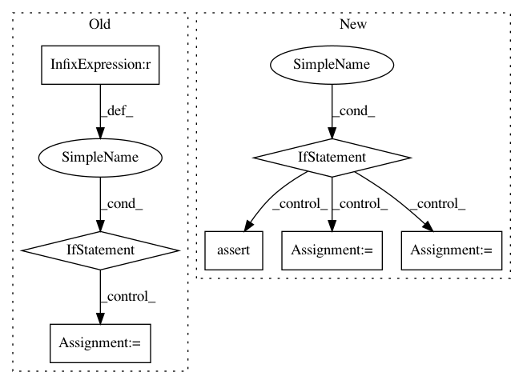

5e8a0c73031db807c0e41ec8bc75f37d6e1b7d30,layer/convolution.py,ConvBNLayer,layer_op,#ConvBNLayer#Any#Any#,115
Before Change
// combine input data
output_tensor = conv_op(input_tensor)
output_tensor = bn_op(output_tensor, is_training)
if (self.acti_fun is not None):
acti_op = ActiLayer(func=self.acti_fun, name="activation")
output_tensor = acti_op(output_tensor)
return output_tensor
After Change
w_initializer=None,
w_regularizer=None,
b_initializer=None,
b_regularizer=None,
padding="SAME",
name="conv"):
self.conv_op = conv_op.upper()
self.padding = padding.upper()
assert(self.conv_op in SUPPORTED_OP)
assert(padding in SUPPORTED_PADDING)
self.layer_name = "{}_{}".format(self.conv_op, name)
super(ConvLayer, self).__init__(name=self.layer_name)
self.n_output_chns= n_output_chns
self.conv_op_func = SUPPORTED_OP[conv_op][0]
self.spatial_rank = SUPPORTED_OP[conv_op][1]
self.kernel_size = np.asarray(kernel_size).flatten()
self.strides = np.asarray(strides).flatten()
self.with_bias = with_bias
self.w_initializer = w_initializer
self.w_regularizer = w_regularizer
In pattern: SUPERPATTERN
Frequency: 3
Non-data size: 7
Instances
Project Name: NifTK/NiftyNet
Commit Name: 5e8a0c73031db807c0e41ec8bc75f37d6e1b7d30
Time: 2017-05-07
Author: wenqi.li@ucl.ac.uk
File Name: layer/convolution.py
Class Name: ConvBNLayer
Method Name: layer_op
Project Name: keras-team/keras
Commit Name: ab75f215b6d65704e7272e0a411d9d082c029846
Time: 2015-08-13
Author: cheng.guo.work@gmail.com
File Name: keras/layers/convolutional.py
Class Name: Convolution2D
Method Name: get_output
Project Name: ray-project/ray
Commit Name: baa053496a78bbb89279847277e49242f721af0e
Time: 2020-05-26
Author: sven@anyscale.io
File Name: rllib/tests/run_regression_tests.py
Class Name:
Method Name: